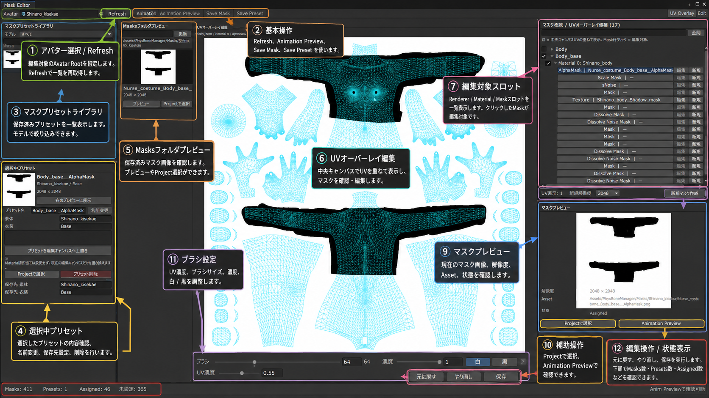

Mask / UV Overlay
Mask Editor
Avatarのマスクスロットを確認し、UVオーバーレイを見ながらマスク画像を編集・保存・プリセット化するEditorです。

基本操作
- Avatar Rootを指定してRefresh。 マスク候補とRenderer / Material / Maskスロットを取得します。
- 右側のマスクスロットを選択。 クリックしたMaskが中央キャンバスの編集対象になります。
- 必要なら新規マスクを作成。 解像度を指定して新しいマスクを作成できます。
- UVオーバーレイを確認。 中央キャンバスにUVを重ね、マスク位置を確認します。
- ブラシで白 / 黒を編集。 ブラシサイズ、濃度、UV表示濃度を調整して編集します。
- 保存。 編集後はSave Maskまたは画面下部の保存操作を実行します。
- 必要ならPreset保存。 Avatar・衣装単位でマスク割り当てを再利用できます。
保存済みマスク
Masksフォルダプレビューから保存済みPNGを確認し、プレビュー表示やProject上のAsset選択を行えます。
未保存の編集がある状態で別マスクへ移動またはEditorを閉じる場合は、保存・破棄・キャンセルの確認に注意してください。